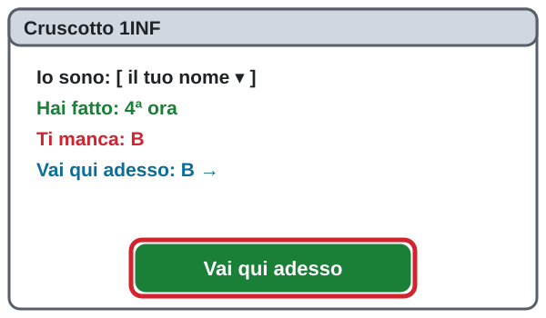
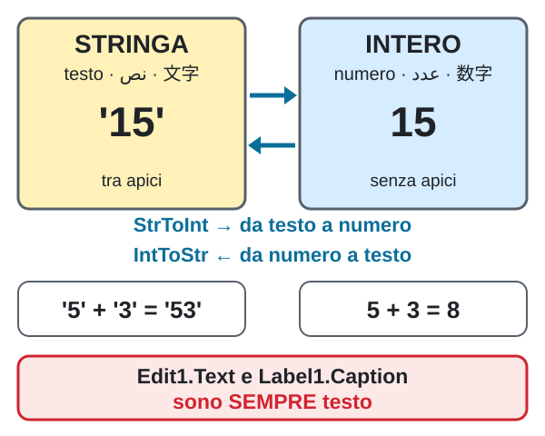
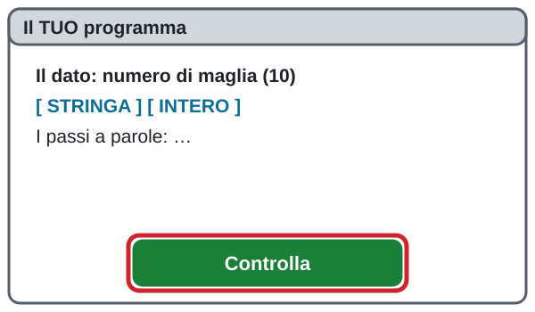
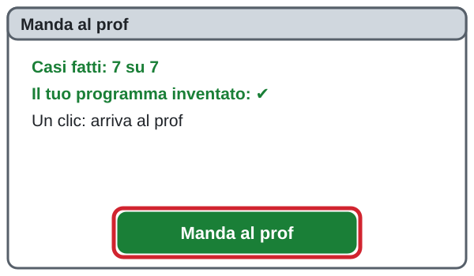
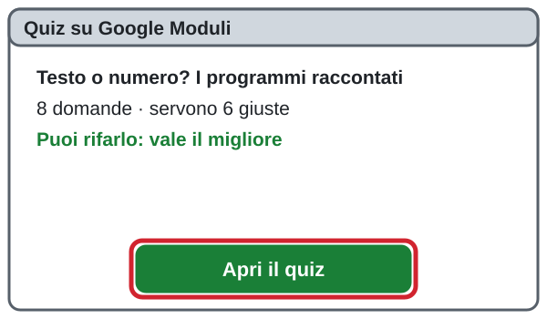
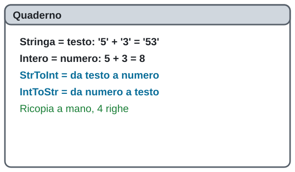

1INF · Tecnologia professionale · giovedì 05/11/2026 · ora 6 (13-14) · oggi niente Lazarus: i programmi si RACCONTANO
Ora 6 · Testo o numero? I programmi raccontati
الساعة 6 · نص أم رقم؟ برامج نحكيها بالكلمات
第 6 节 · 文字还是数字？用话讲出来的程序
La pagina viene aggiornata spesso durante la lezione: premi F5 per vedere la versione nuova. · اضغط F5 لرؤية النسخة الجديدة. · 按 F5 查看新版本。
I primi due si aprono in una finestra nuova: poi torna qui.
Chi sei?
Scrivi nome e cognome: serve al cruscotto e alla consegna.
اكتب الاسم واللقب: تحتاجه لوحة المتابعة والتسليم.
写名字和姓：进度面板和提交都需要。
Percorso facilitato (se sei indietro): casi 1, 3 e 6, poi Manda al prof e il quiz
Fai i passi 1 e 2, i casi 1, 3 e 6, poi i passi 11, 12 e 13.
المسار المبسّط: الخطوتان 1 و 2، الحالات 1 و 3 و 6، ثم الخطوات 11 و 12 و 13.
简化路线：第 1、2 步，案例 1、3、6，然后第 11、12、13 步。
Sei bloccato? Scrivi la domanda nella casella dell'assistente in fondo alla pagina: ti risponde subito. Alza la mano solo se il PC non funziona (non si accende, niente rete).
إذا علقت، اكتب سؤالك في خانة المساعد أسفل الصفحة: يجيبك فوراً. ارفع يدك فقط إذا كان الحاسوب لا يعمل.
卡住了就在页面底部的助手框里写问题，它马上回答。只有电脑坏了才举手。
1Recuperi di Sicurezza (primi 10 minuti)
تعويض اختبارات السلامة (أول 10 دقائق)
安全课补做（前 10 分钟）
Apri il cruscotto e scegli il tuo nome in «Io sono». Se vedi «Ti manca», premi «Vai qui adesso» e fai il quiz. Puoi rifarlo: vale il migliore. Se non ti manca niente, premi «Ho fatto!» e vai al passo 2.
افتح لوحة المتابعة واختر اسمك في «Io sono». إذا رأيت «Ti manca»، اضغط «Vai qui adesso» وأجب عن الاختبار. يمكنك إعادته: تُحسب أفضل نتيجة. إذا لم ينقصك شيء، اضغط «Ho fatto!» وانتقل إلى الخطوة 2.
打开进度面板，在「Io sono」选你的名字。如果看到「Ti manca」，按「Vai qui adesso」做测验。可以重做：算最好的一次。如果什么都不缺，按「Ho fatto!」去第 2 步。
Apri il cruscotto · افتح لوحة المتابعة · 打开进度面板Si apre in una finestra nuova: poi torna qui.

2La teoria in 1 minuto: testo o numero?
النظرية في دقيقة: نص أم رقم؟
一分钟理论：文字还是数字？

- STRINGA = testo. Si scrive tra apici:
'15'. Con il + i testi si attaccano:'5' + '3' = '53'.STRINGA = نص. يُكتب بين علامتي اقتباس: '15'. مع + تلتصق النصوص: '5' + '3' = '53'.
STRINGA = 文字。写在引号里：'15'。用 + 文字会连在一起：'5' + '3' = '53'。
- INTERO = numero, senza apici:
15. Con il + si fa il conto:5 + 3 = 8.INTERO = رقم، بدون علامات اقتباس: 15. مع + نحسب: 5 + 3 = 8.
INTERO = 数字，没有引号：15。用 + 就是计算：5 + 3 = 8。
- StrToInt: da testo a numero.
StrToInt('15') = 15.StrToInt: من نص إلى رقم.
StrToInt：文字变数字。
- IntToStr: da numero a testo.
IntToStr(16) = '16'.IntToStr: من رقم إلى نص.
IntToStr：数字变文字。
- Edit1.Text e Label1.Caption sono SEMPRE testo. Per fare un conto: StrToInt. Per scrivere il risultato: IntToStr.
Edit1.Text و Label1.Caption دائماً نص. للحساب: StrToInt. لكتابة النتيجة: IntToStr.
Edit1.Text 和 Label1.Caption 永远是文字。要计算：StrToInt。要写出结果：IntToStr。
- La domanda magica: «Ci faccio un conto?» Sì = INTERO. No = STRINGA.
السؤال السحري: «هل أحسب به؟» نعم = INTERO. لا = STRINGA.
神奇问题：「我要用它计算吗？」要 = INTERO。不要 = STRINGA。
10Caso 8 · Fallo tuo: inventa il TUO programma
الحالة 8 · اجعله لك: اخترع برنامجك
案例 8 · 做成你自己的：发明你的程序
Pensa a un programma della tua vita: la squadra, il gioco, il lavoro, la spesa. Scegli UN dato, dì se è STRINGA o INTERO e racconta i passi.
فكّر في برنامج من حياتك: الفريق، اللعبة، العمل، التسوق. اختر معلومة واحدة، قل إن كانت STRINGA أو INTERO واحكِ الخطوات.
想一个你生活中的程序：球队、游戏、工作、购物。选一个数据，说它是 STRINGA 还是 INTERO，再讲步骤。
Idee: il numero di maglia, i minuti di una partita, i punti di un gioco, la targa di un'auto, una password con numeri (luca2010).
أفكار: رقم القميص، دقائق المباراة، نقاط اللعبة، لوحة السيارة، كلمة سر فيها أرقام (luca2010).
点子：球衣号码、比赛分钟数、游戏得分、车牌号、带数字的密码（luca2010）。

1. Il mio programma (una frase) · برنامجي (جملة واحدة) · 我的程序（一句话）
2. Il dato · المعلومة · 数据
3. STRINGA o INTERO?
4. I passi a parole · الخطوات بالكلمات · 用文字写步骤
Usa le parole StrToInt, IntToStr oppure «nessuna conversione».
11Manda al prof
أرسل إلى الأستاذ
发给老师
Premi il bottone verde: partono i tuoi casi e il tuo programma inventato. Si apre una scheda con «Consegna arrivata al prof»: chiudila e torna qui.
اضغط الزر الأخضر: تُرسل حالاتك وبرنامجك. تُفتح صفحة فيها «Consegna arrivata al prof»: أغلقها وارجع هنا.
按绿色按钮：你的案例和你发明的程序会发出去。会打开一页写着「Consegna arrivata al prof」：关掉它回到这里。
Se non parte: aspetta un minuto e premi di nuovo. Se ancora non parte, scrivi all'assistente in fondo: «consegna non partita».

12Quiz su Moduli: 8 domande (servono 6 giuste)
اختبار على Moduli: 8 أسئلة (تحتاج 6 صحيحة)
Moduli 测验：8 道题（要答对 6 道）
Premi il bottone verde, rispondi e premi «Invia». Puoi rifarlo: vale il migliore.
اضغط الزر الأخضر، أجب ثم اضغط «Invia». يمكنك إعادته: تُحسب أفضل نتيجة.
按绿色按钮，回答后按「Invia」。可以重做：算最好的一次。
Il quiz non è ancora aperto: premi F5 tra un minuto.
13Ricopia sul quaderno
انسخ في الدفتر
抄在本子上
Ricopia sul quaderno queste 4 righe.
انسخ هذه الأسطر الأربعة في الدفتر.
把这 4 行抄在本子上。
Stringa = testo, tra apici: '5' + '3' = '53'
Intero = numero: 5 + 3 = 8
StrToInt = da testo a numero: StrToInt('15') = 15
IntToStr = da numero a testo: IntToStr(16) = '16'

La pagina viene aggiornata spesso durante la lezione: premi F5 per vedere la versione nuova.